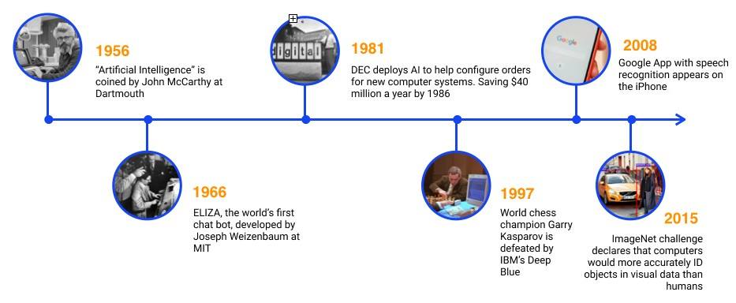
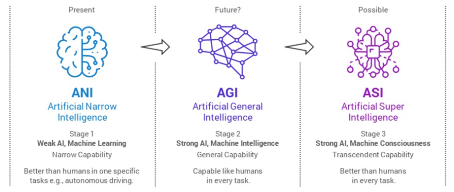

Inteligência Artificial
Publicado por: Leandro Pereira; Hélio Scorpion

O que é?
IA, é um campo na ciência da computação que estuda, a criação de maquinas inteligentes que podem realizar tarefas que normalmente exigem Inteligência humana, como racíocínio, aprendizado e resolver problemas. Ela é composta por muitas disciplinas diferentes como, ciência da computação, estátisticas, análise de dados, engenharia de hardware e software, neurociêncai e etc.
A IA, ensina os computadores a fazerem diversas coisas, como entender o mundo, aprender coisas novas e ate ter ideias novas. Por exemplo a IA é usada no reconhecimento óptico de caracteres (OCR), que extrai dados de textos e documentos.
Como a IA funciona?
As técnicas de inteligência artificial, embora diversas, dependem fundamentalmente de dados, algoritmos e poder computacional. Os sistemas de IA aprendem e melhoram por meio da exposição a grandes quantidades de dados, identificando padrões e relações que os humanos podem não perceber. A IA não é uma tecnologia única, mas um campo amplo que abrange várias áreas como:
- Machine learning (ML): é um tipo de IA em que os sistemas aprendem com os dados para identificar padrões e fazer previsões ou tomar decisões sem programação direta. Imagine ensinar um computador a reconhecer um pássaro mostrando milhares de fotos de pássaros. Ele aprende sozinho como um pássaro se parece.
- Aprendizado profundo (DL): um subcampo do ML, o aprendizado profundo usa redes neurais artificiais com muitas camadas (por isso "profundo") para aprender com os dados. Essas redes são inspiradas na estrutura do cérebro humano e são particularmente boas em tarefas complexas, como reconhecimento de imagem e fala.
- linguagem natural (PLN): o PLN permite que os computadores entendam, interpretem e gerem linguagem humana. É isso que alimenta assistentes de voz como Siri e Alexa, serviços de tradução e chatbots.

Tipos de IA
Existe diversos tipos de IA, cada uma é desenvolvida para algum tipo de tarefa ou melhorias na tecnologia delas e dependendo do estágio que ela esta. Tipos de recursos de IA:- Inteligência Artificial Estreita (ANII): Ela é a unica forma de IA existente ainda, ela é a padrão que conhecemos que é a capaz de realizar tarefas, identificar imagens e etc.. Um exemplo é o Gemini. Ela não é capaz de ter raciocínio ou autoconsciência, geralmente utilizam dados com um algoritmo que faz algumas previsões dentro de um parânmetro definido.
- Inteligência artifical Geral (AGI): Ela é uma proposta para modelo futuro da IA atual, teoricamente ela seria capaz de usar um raciocínio semelhante a um humano e com capacidade de realizar uma ampla gama de tarefas, ela poderia aprender, adaptar e se melhorar. Uma coisa importante é que ela ainda não existe. Um exemplo ficticio seria os dróides de star wars.
- SuperInteligência Artificial (ASI): Ela ainda é uma forma teórica da IA, mas ela seria ainda mas avançada que a AGI funcionando além do controle humano, com capacidade de ser autoconsciente, superar a inteligência humana, a criatividade humana e ate mesmo possui uma inteligência emocional.
